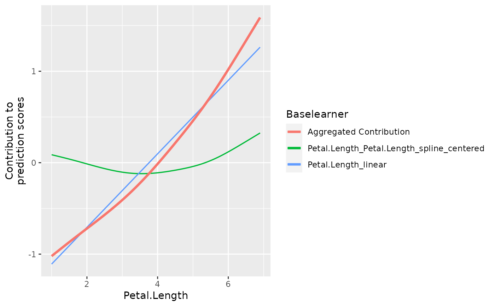

Wrapper to boost general additive models using components
boostComponents.RdThis wrapper function automatically initializes the model by adding all numerical features as components. This means, that for each numerical feature a linear effect and non-linear spline base-learner is added. The non-linear part is constructed in way that it cannot model the linear part. Hence, it is just selected if a non-linear base learner is really necessary. Categorical features are dummy encoded and inserted using another linear base-learners without intercept.
The returned object is an object of the Compboost class. This object can be
used for further analyses (see ?Compboost for details).
Usage
boostComponents(
data,
target,
optimizer = NULL,
loss = NULL,
learning_rate = 0.05,
iterations = 100,
trace = -1,
degree = 3,
n_knots = 20,
penalty = 2,
df = 0,
differences = 2,
data_source = InMemoryData,
oob_fraction = NULL,
bin_root = 0,
cache_type = "inverse",
stop_args = list(),
df_cat = 1,
stop_time = "microseconds",
additional_risk_logs = list()
)Arguments
- data
(
data.frame())
A data frame containing the data.- target
(
character(1)| ResponseRegr | ResponseBinaryClassif)
Character value containing the target variable or response object. Note that the loss must match the data type of the target.- optimizer
(OptimizerCoordinateDescent | OptimizerCoordinateDescentLineSearch | OptimizerAGBM | OptimizerCosineAnnealing)
An initializedS4optimizer object (requires to callOptimizer*.new(..). See the respective help page for further information.- loss
(LossQuadratic | LossBinomial | LossHuber | LossAbsolute | LossQuantile)
An initializedS4loss object (requires to callLoss*$new(...)). See the respective help page for further information.- learning_rate
(
numeric(1))
Learning rate to shrink the parameter in each step.- iterations
(
integer(1))
Number of iterations that are trained. Ifiterations == 0, the untrained object is returned. This can be useful if other base learners (e.g. an interaction via a tensor base learner) are added.- trace
(
integer(1))
Integer indicating how often a trace should be printed. Specifyingtrace = 10, then every 10th iteration is printed. If no trace should be printed settrace = 0. Default is -1 which means that in total 40 iterations are printed.- degree
(
integer(1))cr Polynomial degree of the splines.- n_knots
(
integer(1))
Number of equidistant "inner knots". The actual number of used knots does also depend on the polynomial degree.- penalty
(
numeric(1))
Penalty term for p-splines. If the penalty equals 0, then ordinary b-splines are fitted. The higher the penalty, the higher the smoothness.- df
(
numeric(1))
Degrees of freedom of the base learner(s).- differences
(
integer(1))
Number of differences that are used for penalization. The higher the difference, the higher the smoothness.- data_source
(
Data*)
UninitializedData*object which is used to store the data. At the moment just in memory training is supported.- oob_fraction
(
numeric(1))
Fraction of how much data are used to track the out of bag risk.- bin_root
(
integer(1))
The binning root to reduce the data to \(n^{1/\text{binroot}}\) data points (defaultbin_root = 1, which means no binning is applied). A value ofbin_root = 2is suggested for the best approximation error (cf. Wood et al. (2017) Generalized additive models for gigadata: modeling the UK black smoke network daily data).- cache_type
(
character(1))
String to indicate what method should be used to estimate the parameter in each iteration. Default iscache_type = "cholesky"which computes the Cholesky decomposition, caches it, and reuses the matrix over and over again. The other option is to usecache_type = "inverse"which does the same but caches the inverse.- stop_args
(
list(2))
List containing two elementspatienceandeps_for_breakwhich can be set to use early stopping on the left out data from settingoob_fraction. If! is.null(stop_args), early stopping is triggered.- df_cat
(
numeric(1))
Degrees of freedom of the categorical base-learner.- stop_time
(
character(1))
Unit of measured time.- additional_risk_logs
(
list(Logger))
Additional logger passed to theCompboostobject.
Value
A model of the Compboost class. This model is an R6 object
which can be used for retraining, predicting, plotting, and anything described in
?Compboost.
Examples
mod = boostComponents(data = iris, target = "Sepal.Length", df = 4)
#> 1/100 risk = 0.32 time = 0
#> 2/100 risk = 0.29 time = 67
#> 4/100 risk = 0.25 time = 141
#> 6/100 risk = 0.22 time = 211
#> 8/100 risk = 0.2 time = 281
#> 10/100 risk = 0.17 time = 349
#> 12/100 risk = 0.16 time = 415
#> 14/100 risk = 0.14 time = 480
#> 16/100 risk = 0.13 time = 545
#> 18/100 risk = 0.12 time = 611
#> 20/100 risk = 0.12 time = 676
#> 22/100 risk = 0.11 time = 741
#> 24/100 risk = 0.1 time = 804
#> 26/100 risk = 0.1 time = 869
#> 28/100 risk = 0.097 time = 938
#> 30/100 risk = 0.094 time = 1007
#> 32/100 risk = 0.091 time = 1075
#> 34/100 risk = 0.089 time = 1143
#> 36/100 risk = 0.086 time = 1212
#> 38/100 risk = 0.084 time = 1282
#> 40/100 risk = 0.083 time = 1352
#> 42/100 risk = 0.081 time = 1423
#> 44/100 risk = 0.079 time = 1493
#> 46/100 risk = 0.078 time = 1561
#> 48/100 risk = 0.076 time = 1630
#> 50/100 risk = 0.075 time = 1700
#> 52/100 risk = 0.074 time = 1771
#> 54/100 risk = 0.072 time = 1841
#> 56/100 risk = 0.071 time = 1911
#> 58/100 risk = 0.07 time = 1979
#> 60/100 risk = 0.069 time = 2050
#> 62/100 risk = 0.068 time = 2121
#> 64/100 risk = 0.067 time = 2190
#> 66/100 risk = 0.066 time = 2262
#> 68/100 risk = 0.065 time = 2333
#> 70/100 risk = 0.065 time = 2405
#> 72/100 risk = 0.064 time = 2476
#> 74/100 risk = 0.063 time = 2547
#> 76/100 risk = 0.063 time = 2621
#> 78/100 risk = 0.062 time = 2693
#> 80/100 risk = 0.061 time = 2763
#> 82/100 risk = 0.061 time = 2836
#> 84/100 risk = 0.06 time = 2909
#> 86/100 risk = 0.06 time = 2981
#> 88/100 risk = 0.059 time = 3055
#> 90/100 risk = 0.059 time = 3128
#> 92/100 risk = 0.058 time = 3201
#> 94/100 risk = 0.058 time = 3275
#> 96/100 risk = 0.058 time = 3347
#> 98/100 risk = 0.057 time = 3419
#> 100/100 risk = 0.057 time = 3490
#>
#>
#> Train 100 iterations in 0 Seconds.
#> Final risk based on the train set: 0.057
#>
mod$getBaselearnerNames()
#> [1] "Sepal.Width_linear"
#> [2] "Sepal.Width_Sepal.Width_spline_centered"
#> [3] "Petal.Length_linear"
#> [4] "Petal.Length_Petal.Length_spline_centered"
#> [5] "Petal.Width_linear"
#> [6] "Petal.Width_Petal.Width_spline_centered"
#> [7] "Species_ridge"
table(mod$getSelectedBaselearner())
#>
#> Petal.Length_Petal.Length_spline_centered
#> 17
#> Petal.Length_linear
#> 59
#> Sepal.Width_linear
#> 24
plotPEUni(mod, "Petal.Length")

mod$predict()
#> [,1]
#> [1,] 5.056588
#> [2,] 4.930277
#> [3,] 4.950279
#> [4,] 4.985867
#> [5,] 5.081851
#> [6,] 5.247896
#> [7,] 5.031326
#> [8,] 5.061654
#> [9,] 4.905014
#> [10,] 4.985867
#> [11,] 5.137441
#> [12,] 5.091742
#> [13,] 4.930277
#> [14,] 4.838307
#> [15,] 5.121707
#> [16,] 5.314278
#> [17,] 5.127116
#> [18,] 5.056588
#> [19,] 5.222634
#> [20,] 5.162703
#> [21,] 5.121584
#> [22,] 5.137441
#> [23,] 4.959040
#> [24,] 5.096322
#> [25,] 5.180734
#> [26,] 4.990692
#> [27,] 5.091742
#> [28,] 5.086916
#> [29,] 5.031326
#> [30,] 5.041217
#> [31,] 5.015955
#> [32,] 5.061654
#> [33,] 5.238490
#> [34,] 5.233425
#> [35,] 4.985867
#> [36,] 4.919608
#> [37,] 5.026066
#> [38,] 5.081851
#> [39,] 4.899754
#> [40,] 5.061654
#> [41,] 5.026066
#> [42,] 4.722918
#> [43,] 4.950279
#> [44,] 5.117004
#> [45,] 5.281784
#> [46,] 4.930277
#> [47,] 5.192791
#> [48,] 4.980801
#> [49,] 5.137441
#> [50,] 5.006064
#> [51,] 6.190562
#> [52,] 6.095561
#> [53,] 6.262441
#> [54,] 5.639078
#> [55,] 6.041791
#> [56,] 5.994512
#> [57,] 6.215824
#> [58,] 5.376738
#> [59,] 6.067053
#> [60,] 5.696216
#> [61,] 5.352787
#> [62,] 5.905896
#> [63,] 5.613815
#> [64,] 6.114774
#> [65,] 5.620309
#> [66,] 6.023459
#> [67,] 6.045037
#> [68,] 5.784787
#> [69,] 5.842938
#> [70,] 5.645691
#> [71,] 6.238799
#> [72,] 5.765390
#> [73,] 6.110867
#> [74,] 6.089512
#> [75,] 5.926536
#> [76,] 5.998196
#> [77,] 6.137750
#> [78,] 6.286902
#> [79,] 6.019774
#> [80,] 5.504361
#> [81,] 5.577351
#> [82,] 5.535187
#> [83,] 5.696216
#> [84,] 6.261801
#> [85,] 6.045037
#> [86,] 6.146086
#> [87,] 6.165299
#> [88,] 5.821360
#> [89,] 5.860574
#> [90,] 5.689603
#> [91,] 5.897147
#> [92,] 6.092316
#> [93,] 5.714865
#> [94,] 5.351475
#> [95,] 5.830109
#> [96,] 5.905896
#> [97,] 5.880634
#> [98,] 5.926536
#> [99,] 5.294365
#> [100,] 5.810049
#> [101,] 6.924529
#> [102,] 6.261801
#> [103,] 6.787418
#> [104,] 6.584052
#> [105,] 6.726964
#> [106,] 7.226203
#> [107,] 5.918725
#> [108,] 7.010945
#> [109,] 6.600652
#> [110,] 7.062325
#> [111,] 6.388113
#> [112,] 6.366606
#> [113,] 6.552337
#> [114,] 6.160590
#> [115,] 6.287064
#> [116,] 6.492918
#> [117,] 6.552337
#> [118,] 7.491818
#> [119,] 7.315773
#> [120,] 6.084803
#> [121,] 6.718079
#> [122,] 6.186654
#> [123,] 7.239194
#> [124,] 6.161392
#> [125,] 6.743342
#> [126,] 6.899267
#> [127,] 6.137750
#> [128,] 6.237179
#> [129,] 6.558789
#> [130,] 6.726964
#> [131,] 6.860226
#> [132,] 7.301489
#> [133,] 6.558789
#> [134,] 6.287064
#> [135,] 6.508264
#> [136,] 6.910751
#> [137,] 6.710364
#> [138,] 6.577600
#> [139,] 6.188275
#> [140,] 6.521963
#> [141,] 6.634576
#> [142,] 6.362851
#> [143,] 6.261801
#> [144,] 6.837943
#> [145,] 6.743342
#> [146,] 6.389376
#> [147,] 6.160590
#> [148,] 6.389376
#> [149,] 6.597750
#> [150,] 6.337588